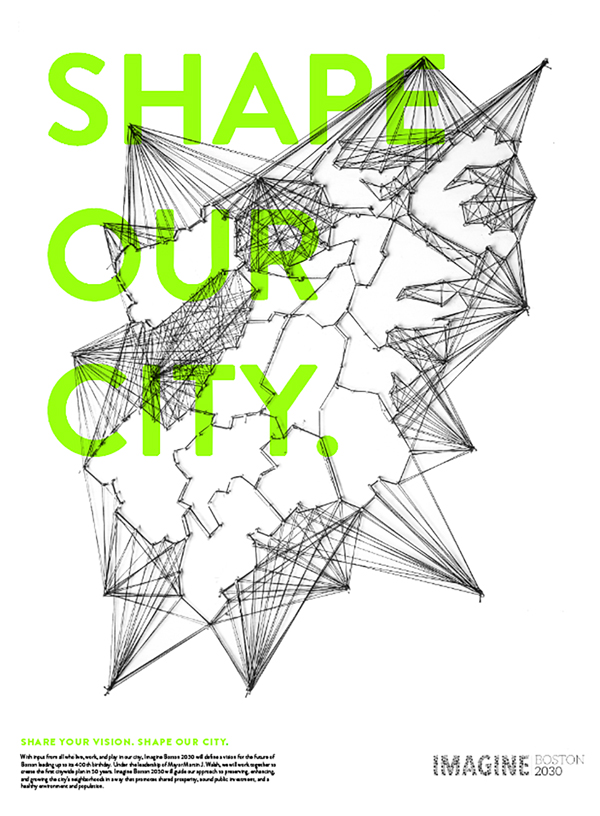
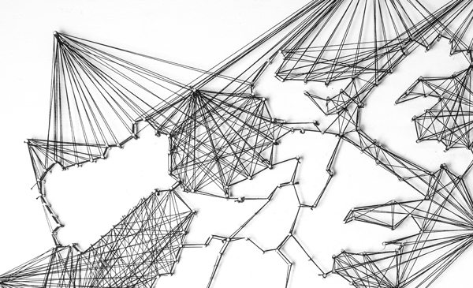
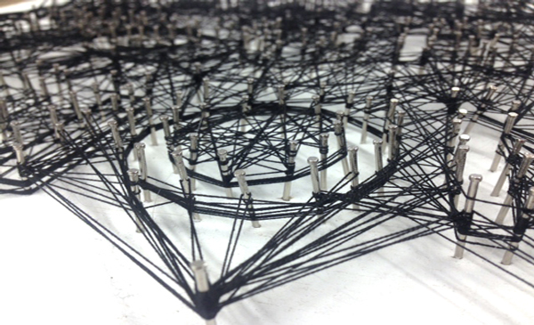
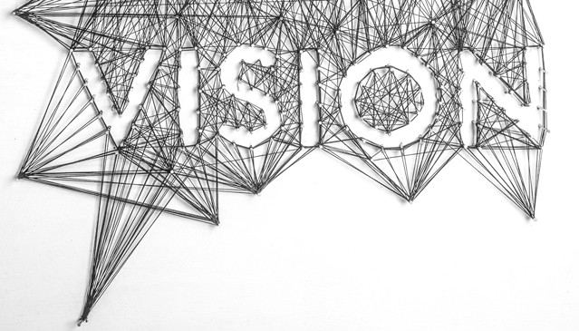

Imagine Boston 2030, a project for the new city plan of Boston for the year 2030. For the reimagining of Boston I focused on the neighborhoods and the people of Boston coming together, connecting to create a brighter future for the city. I wanted to use a simple medium so I used black thread. With hundreds of strands of thread and image is created of the neighborhoods of Boston. And the message of the campaign "share your vision."
   